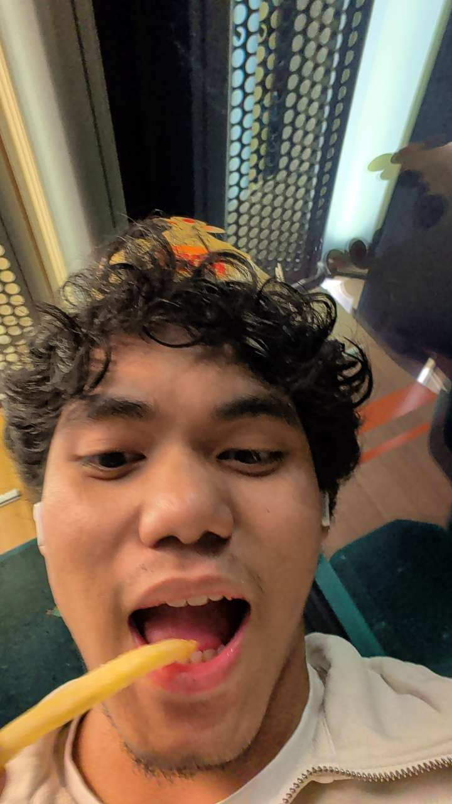

Dette er nettsiden min om mitt første skoleåret på 1IMA.

Jeg heter Davidglen og er 18 år gammel. Jeg går på informasjonsteknologi og medieproduksjon (1IMA) ved Røyken VGS. Dette skoleåret har jeg jobbet med ulike prosjekter innen teknologi, programmering og digitale medier.
På fritiden spiller jeg basketball og er også aktiv i innebandy. Jeg liker lagidretter fordi det gir meg både fysisk aktivitet og muligheten til å samarbeide med andre. Jeg synes det er motiverende å jobbe sammen som et lag, spesielt når kommunikasjon og samarbeid er viktig.
Jeg liker også å høre på musikk og spille spill. Musikk bruker jeg i mange situasjoner, enten jeg slapper av, jobber med skole eller er på farten. Det hjelper meg å fokusere og komme i riktig stemning.
Jeg er også sosial og liker å snakke med andre mennesker. Jeg trives godt i grupper og synes det er lett å samarbeide, både i skolearbeid og fritid. Jeg liker å møte nye mennesker og lære hvordan andre tenker og løser problemer.
Generelt liker jeg aktiviteter som kombinerer samarbeid, kreativitet og underholdning. Jeg prøver alltid å utvikle meg i det jeg interesserer meg for, enten det er sport, teknologi eller sosiale aktiviteter. Jeg liker å utfordre meg selv og lære nye ting som kan gjøre meg bedre over tid.